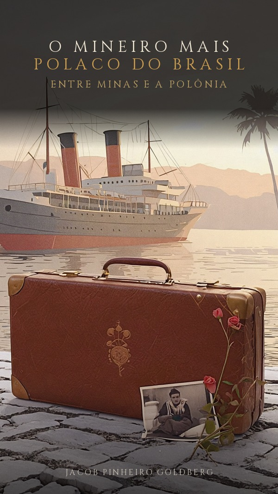

Há livros que são mapas de uma só pessoa — e mapas, ao mesmo tempo, de um século inteiro. O Mineiro mais Polaco do Brasil é a viagem que Musa Miranda empreendeu para entender Jacob Pinheiro Goldberg: psicólogo, advogado, assistente social e poeta, filho de imigrantes poloneses que se casaram em Juiz de Fora mas já se conheciam em Ostrowiec, de onde vieram nos anos 20. Em 2017, a autora foi à Polônia visitar os lugares que, no imaginário do poeta, ocupam um espaço dramático — e voltou com fragmentos de críticos, tradutores e versos que retratam um cidadão do mundo.
No centro do volume está um testemunho que dói e ilumina: a noite de 2002 em que cinquenta intelectuais se reuniram em São Paulo para fundar o Grupo de Análise Czeslaw Milosz, e Jacob descobriu, nos versos do Nobel polonês, o recado de sua própria origem. "Meus pais imigraram da Polônia, aproximadamente há um século, vindos de Ostrowiecz", escreve. "A família de meu pai foi exterminada em campos de concentração." Da dor desenraizada nasce, porém, uma epopeia de perdão e reconciliação — o país que não morre, o coração nas trevas onde alguém morre para alguém renascer.
Reunindo poemas vertidos ao inglês e ao polonês, homenagens de Henryk Siewierski, Regina Przybycien e João Adolfo Hansen, e a voz autobiográfica do próprio Jacob em O Estado de São Paulo, este é um retrato comovente da magia do exílio. Como observou Hansen, são poemas fortes, duros, sem nenhum consolo — e, ainda assim, capazes de fazer os desesperados pensarem que, se há homens como ele, há esperança para todos.
Dedico à memória de Czeslaw Milosz
Polonês e mineiro, judeu e brasileiro: a herança ambivalente de quem nunca esteve na terra do pai e, mesmo assim, a carrega como destino subterrâneo.
A sombra dos campos de concentração e a saga da reconciliação — perdão, harmonia e ternura erguidos sobre as ruínas de um século bárbaro.
Poemas duros e sem consolo que, segundo a crítica, dão esperança a todos: a palavra como pátria de quem não tem pátria, só identidade.
Não tenho pátria, tenho identidade. Não tenho família, tenho amores. Porque nada tenho, nem a mim mesmo, tenho o Sal da Terra, que alimenta os famintos.
Alguém morre para alguém renascer. Os tempos são bárbaros, mas também há espaço para perdão, harmonia e ternura.
O essencial correu no entretexto. Meus pais imigraram da Polônia, aproximadamente há um século, vindos de Ostrowiec. Meu avô materno, o rabino Aron Elwing, com a família, e meu pai, um "outsider", sozinho no cargueiro Valdívia. Pobres, guardavam da Polônia a mágoa de judeus desenraizados e uma nostalgia saudosa de amor profundo. Conflito que dilacerava suas lembranças. Nasci em Juiz de Fora e alimentei-me com esses sentimentos ambivalentes por toda a minha vida.
Até que deparei-me com a escrita de Milosz. Li e reli seus versos, e atrás das palavras adivinhei o recado. A família de meu pai foi exterminada em campos de concentração. Ao minuto de silêncio do luto, segue-se a viagem de volta. O ódio não prevaleceu. Deixei as palavras escorrerem, para retratar os passos peregrinos. Passa no espaço quem não trai seu tempo.
Leia o homem inteiro: o mineiro mais polaco do Brasil, entre o choro e o riso, entre Ostrowiec e Juiz de Fora.